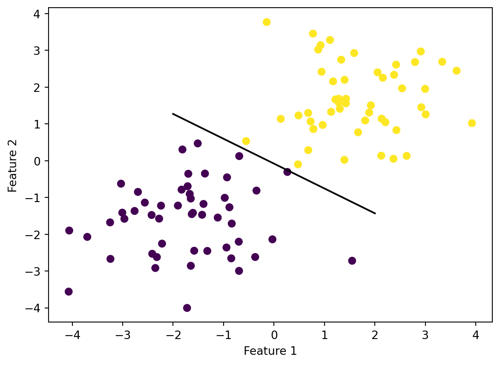

In the perceptron algorithm, we have a data set described by:
A matrix \(\mX \in \R^{n\times p}\) of predictor variables. There are \(n\) observations with \(p\) features.
A vector \(\vy \in \{0,1\}^{n}\) of binary labels.
We assume that the labels in our data can be (approximately) separated by a linear predictor. The strongest version of this assumption is that our data are linearly separable. This means that there exists a vector \(\vw \in p\) and a scalar \(b\) such that, for every \(i\),
Here’s an example of what our data might look like. For visualization purposes, we are going to have \(p = 2\) features.
import numpy as npimport pandas as pdimport seaborn as snsfrom matplotlib import pyplot as pltfrom sklearn.datasets import make_blobsnp.random.seed(12345)n =100p_features =3X, y = make_blobs(n_samples =100, n_features = p_features -1, centers = [(-1.7, -1.7), (1.7, 1.7)])fig = plt.scatter(X[:,0], X[:,1], c = y)xlab = plt.xlabel("Feature 1")ylab = plt.ylabel("Feature 2")
You may be able to visualize a line that separates all the purple “0” labels from the yellow “1” labels. Our end-goal is a Python class that will allow us to find such a separating line, when it exists.
2 Demo: What Your Algorithm Will Do
You are going to implement a Perceptron class in a script file called perceptron.py. (you should place it next to your .ipynb notebook in which you write your blog post.) You’ll import it like this:
from perceptron import Perceptron
By the time you have successfully implemented your Perceptron class, you should be able to replicate the following results on your blog post.
First, you should be able to import your class
from perceptron import Perceptron
Then you should be able to create an instance of the class and fit it to data.
p = Perceptron()p.fit(X, y, max_steps =1000)
This should result in p having an instance variable w of weights and an instance variable history of scores:
In this particular example, the algorithm was able to achieve perfect, 100% classification.
You can also visualize the line that the algorithm finds to separate the data.
def draw_line(w, x_min, x_max): x = np.linspace(x_min, x_max, 101) y =-(w[0]*x + w[2])/w[1] plt.plot(x, y, color ="black")fig = plt.scatter(X[:,0], X[:,1], c = y)fig = draw_line(p.w, -2, 2)xlab = plt.xlabel("Feature 1")ylab = plt.ylabel("Feature 2")

As we know from the previous investigations, the score on the data is:
p.score(X, y)
1.0
3 What You Should Do
This blog posts as three main components: implement the perceptron algorithm, complete several experiments, and write careful prose to describe your findings.
3.1 Source Code
Your class should have the following methods:
Perceptron.fit(X, y) is the primary method. This method has no return value. If p is a Perceptron, then after p.fit(X, y) is called, p should have an instance variable of weights called w. This w is the vector \(\tilde{\vw} = (\vw, -b)\) in the classifier above. Additionally, p should have an instance variable called p.history which is a list of the evolution of the score over the training period (see Perceptron.score(X, y) below.)
Perceptron.predict(X) should return a vector \(\hat{\vy} \in \{0,1\}^n\) of predicted labels. These are the model’s predictions for the labels on the data.
Perceptron.score(X, y) should return the accuracy of the perceptron as a number between 0 and 1, with 1 corresponding to perfect classification.
Feel free to add any other methods or functions that you find helpful while implementing.
Implementing fit()
To implement fit(), it’s convenient to consider a modified version of \(\mX\): \(\tilde{\mX} = [\mX, \mathbf{1}]\), where \(\mathbf{1} \in \R^n\) is a column-vector of \(1\)s. The reason this is handy is that if we also define \(\tilde{\vw} = (\vw, -b)\), then we can write our classification rule as
In this expression, \(\tilde{y}_i = 2y_i - 1\) is a convenient version of \(y_i\) that takes values \(-1\) and \(1\) instead of \(0\) and \(1\).
This update is performed until either a user-specified maximum number of steps is reached or until the score (accuracy) reaches 1.0.
Note that in an iteration in which \(\tilde{y}_i \langle \tilde{\vw}^{(t)}, \tilde{\vx}_i\rangle \geq 0\), nothing happens. Take a moment to check that this occurs when the current weight vector \(\tilde{\vw}^{(t)}\) correctly classifies the tuple \((\vx_i, y_i)\).
Other Specifications
You should be able to replicate the demo in Section 2 with your source code. Feel free to use that demo as a test case – your source code may be in good shape when you are able to fully replicate the results.
For perfect replication, you’ll need to include the call to np.random.seed() immediately after importing your packages.
An excellent solution will have exactly one for-loop, of the form:
for _ inrange(max_steps):# perform the perceptron update and log the score in self.history
That is, you should not do any loops over the data! Use vectorized numpy operations and matrix-vector multiplication.
You should also not use if statements to perform comparisons between numbers.
For a hint on how you can avoid doing this, you can reflect on the following two code snippets:
print((1<2)*2)print((1>2)*2)
Please include informative docstrings for Perceptron.fit(), Perceptron.predict(), and Perceptron.score().
A concise solution should likely be no more than 60 lines of compact Python code (excluding comments and docstrings).
3.2 Experiments
Please perform experiments (with visualizations) that illustrate the following:
Using 2d data like the data in the example, if the data is linearly separable then the perceptron algorithm converges to weight vector \(\tilde{\vw}\) describing a separating line (provided that the maximum number of iterations is large enough).
Please show visualizations of the data, the separating line, and the evolution of the accuracy over training. It’s also fine for you to use the loss instead of the accuracy if you’d prefer.
For 2d data, when the data is not linearly separable, the perceptron algorithm will not settle on a final value of \(\tilde{\vw}\), but will instead run until the maximum number of iterations is reached, without achieving perfect accuracy.
Please show visualizations of the data, the line in the final iteration, and the evolution of the score over training.
The perceptron algorithm is also able to work in more than 2 dimensions! Show an example of running your algorithm on data with at least 5 features. You don’t need to visualize the data or the separating line, but you should still show the evolution of the score over the training period. Include a comment on whether you believe that the data is linearly separable based on your observation of the score.
3.3 Writing
In crafting your blog post, please include the following components:
At the very top of your blog post, a link to your source code (perceptron.py) on your GitHub repo.
A brief walk-through of your implementation of the perceptron update (Equation 1) in your source code. Quote the function which you use to perform the update. It’s not necessary to walk the user through every single aspect of your solution class.
Full code and English descriptions for all the experiments you perform.
At the end of your blog post, please address the following question:
What is the runtime complexity of a single iteration of the perceptron algorithm update as described by Equation 1? Assume that the relevant operations are addition and multiplication. Does the runtime complexity depend on the number of data points \(n\)? What about the number of features \(p\)?
You only need to consider this question in the context of a single update. The question of how many updates are required to converge is a trickier one that you don’t have to discuss in your blog post.
4 Hints
The code
X_ = np.append(X, np.ones((X.shape[0], 1)), 1)
can be used to form the matrix \(\tilde{\mX} = [\mathbf{X}, \mathbf{1}]\).